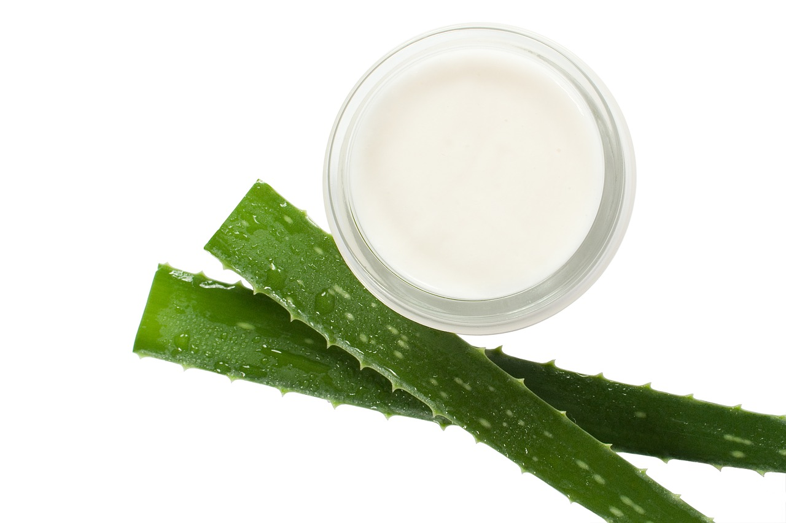

Crema Hidratante de Aloe Vera
Ideal para pieles sensibles. Hidrata y suaviza naturalmente.
Productos ecológicos para el cuidado de tu piel
Ideal para pieles sensibles. Hidrata y suaviza naturalmente.
Limpieza profunda para pieles mixtas y grasas.
Activa la circulación y elimina células muertas.
Aroma relajante y limpieza suave con aceites esenciales.